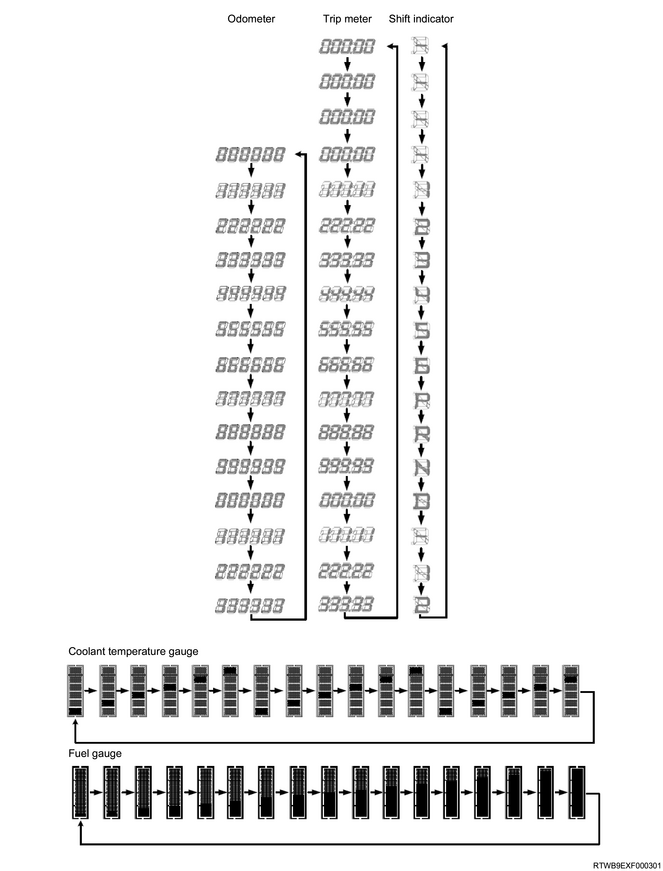
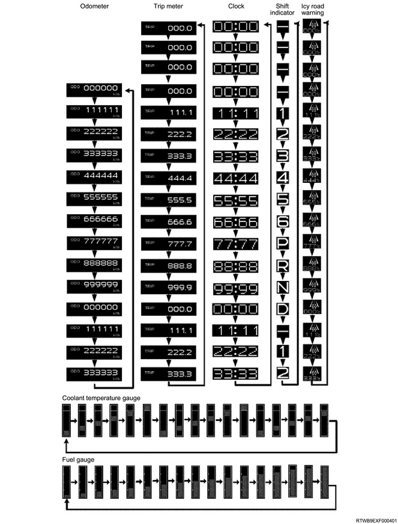

Note
The instrument panel cluster verifies if the system functions properly when turning ON the ignition switch.
When the system is running normal, the LEDs will operate as shown below.
Turns OFF after illuminating for 3 seconds
･ SVS indicator light
･ ABS warning light
･ ESC warning light
･ Fuel filter warning light
･ Check 4WD warning light
･ Check trans warning light
･ Water separator warning light
･ Engine overheat warning light
･ Automatic transmission fluid temperature warning light
Turns OFF after blinking for 7 seconds
･SRS air bag warning light
Turns ON after 10 seconds
･Low fuel warning light
Turns OFF after the engine is started
･ Brake system warning / parking brake warning light
･ Engine oil pressure warning light
･ Check engine warning light
･ Generator warning light
Note
Function checking whether each pointer the speedometer, tachometer, and also the LCD segment display are moving normally or not.
Shift to the self diagnostic mode according to the following.
1. When the odd/trip meter switch is continuously turned ON, ignition switch is also turned ON.
2. Odd/trip switch is continuously pressed for more than 550ms-650ms after turning ON the ignition switch.
3. Odd/trip reset button is turned OFF.
4. Odd/trip reset button is turned ON-OFF 3 times.
5. Carry out 1 - 4 within 6.9-7.1 seconds.
6. Press and hold the reset button.
Functioning correctly, the needles will move to the positions specified in the table below.
Speedometer 100 km/h
Tachometer 3,000 rpm
7. Release the reset button.
The needles return to their home position.
8. Turn the ignition switch to the OFF position to cancel
The self-diagnosis mode.
If the instrument panel cluster needles move as described above, there is no problem with the instrument panel cluster assembly.
Problems may exist in other vehicle components related instrument panel cluster assembly operation.
If the instrument panel cluster needles move as described above, there is a problem with the instrument panel cluster assembly.
The assembly must be replaced.

Note
Function checking whether each pointer the speedometer, tachometer, and also the MID display are moving normally or not.
Shift to the self diagnostic mode according to the following.
1. When the MID switch is continuously turned ON, ignition switch is also turned ON.
2. MID switch is continuously pressed for more than 550ms-650ms after turning ON the ignition switch.
3. MID switch is turned OFF.
4. MID switch is turned ON-OFF 3 times.
5. Carry out 1 - 4 within 6.9-7.1 seconds.
6. Press and hold the MID switch.
Functioning correctly, the needles will move to the positions specified in the table below.
Speedometer 100 km/h
Tachometer 3,000 rpm
7. Release the MID switch.
The needles return to their home position.
8. Turn the ignition switch to the OFF position to cancel
The self-diagnosis mode.
If the instrument panel cluster needles move as described above, there is no problem with the instrument panel cluster assembly.
Problems may exist in other vehicle components related instrument panel cluster assembly operation.
If the instrument panel cluster needles move as described above, there is a problem with the instrument panel cluster assembly.
The assembly must be replaced.
